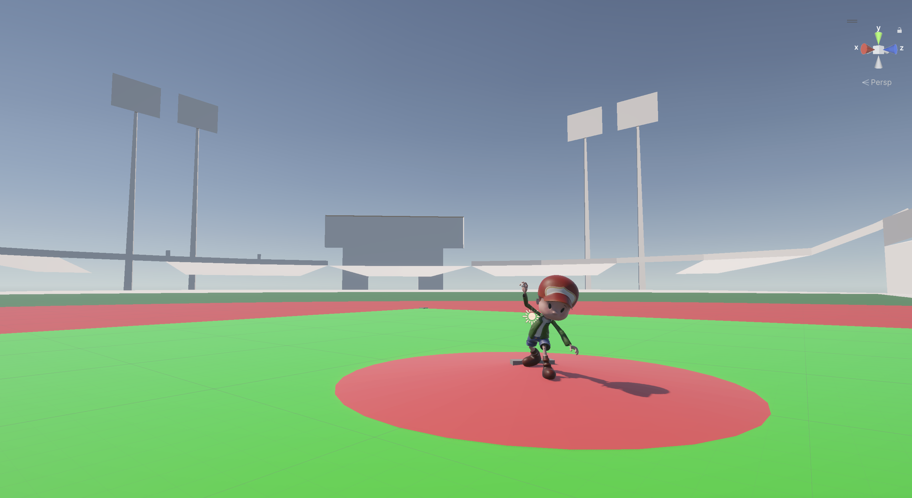

XR / 3D · Independent project
Ten years behind the plate, one torn hamstring — and a question: could a headset give a catcher their reps back?
Role
Solo — design, code, 3D
Status
In progress
Platform
Meta Quest
Stack
Unity · Blender · C#
I was recruited to play baseball on speed and a decade of catching instincts — until a torn hamstring ended that path. But the training problem stuck with me: a catcher's hardest skill, reading a pitch in the quarter-second after release, can only be practiced against live arms. Pitchers' arms wear out. Facilities cost money. And an injured player gets zero reps at all.
VR flips that constraint. A headset can throw unlimited pitches with perfect variety — every speed, every break, any count — with no arm fatigue and no facility. The catch: it only works if the ball behaves exactly like a real one.
The whole experience lives or dies on whether a fastball feels like a fastball. So the core of the project is a custom ball-physics engine, with the environment and interaction built around it.
Custom ball physics
Pitch-type simulation — fastball, curve, slider — each with authentic spin, break, and velocity profiles rather than canned animations.
Real-time trajectory model
Trajectories computed live with speed variation, so no two pitches arrive identically — the way a real arm works.
Catcher scenarios
Interactive drills built around the receiving position, with strike-zone detection judging every catch and frame.
Ground-up 3D
Every asset in the scene — field, gear, environment — modeled from scratch in Blender and brought into Unity.

Where it stands
The physics engine and catcher drills are working in-headset. Next: batter scenarios and pitch-recognition scoring — turning reps into measurable progress.